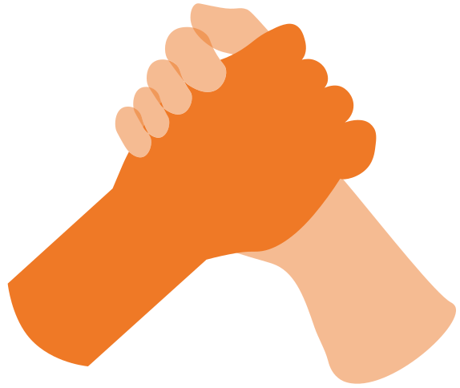

Ce site est en cours de construction. Merci de votre compréhension.

Bienvenue sur le site de la Ligue contre le cancer de l’Aube. Le Comité 10 est un comité départemental français créé en 1959. Nous comprenons à ce jour 23 administrateurs, 2 salariés ainsi que de nombreux bénévoles.
Tous ensemble, nous luttons sur tous les fronts face à la maladie tout en restant apolitique et indépendant financièrement, grâce à la générosité de nos donateurs.
Aujourd’hui, nous souhaitons avant toute chose apporter un soutien adapté à tous dans une optique extra-médicale complémentaire, tout en nous engageant dans de nombreuses actions d’accompagnement psychologiques et financières afin de vous accompagner au quotidien.
Des solutions totalement gratuites et adaptées à votre parcours maladie. Bénéficiez de nos nombreuses aides et ateliers de soins de support aubois spécialement adaptés à tous.
Téléchargez notre brochure
Profitez des aides financières mise en place par la Ligue de l’Aube, spécialement adaptées pour tout type de patient.
Demandez votre dossier
Nous dépendons entièrement des financements, de la générosité de nos donateurs ainsi que de l’engagement de nos bénévoles et de nos salariés. C’est grâce à toute cette implication commune que la Ligue a pu à ce jour devenir la 1ère association finançant la recherche contre le cancer.
Vos donations sont majoritairement investies dans l’accompagnement et les aides mises à disposition des patients. Elles peuvent également servir à promouvoir des événements de prévention contre le cancer, à la participation aux recherches ou encore à la mise en place de services extra médicaux.